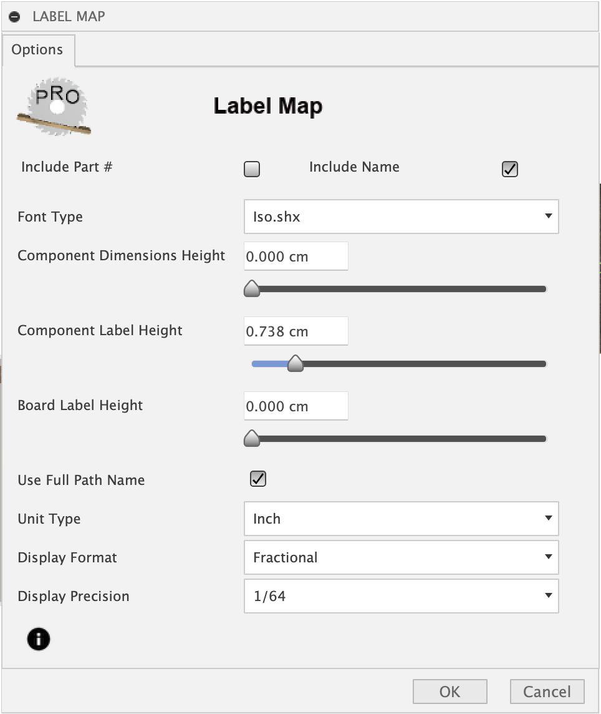

Post-Mapping Tasks¶
Once a map with component bodies is created there are a number of tasks which can be executed on the created map. To access these tasks right-click on the map component in the browse tree to bring up the context menu as shown here. A description of each task follows.

Available Tasks¶
Export map to SVG¶
This task will export a flat panel design from the created map as a multi-colored SVG file. The colors represent loops taken from the top view of each component in the map. The colored loops include perimeter, insets or pockets, and cutouts. You can also include component labels with part numbers, descriptive name and dimensions. Insets has a Grayscale color which when set will produce a varying gray fill color, the lighter gray for deeper inset pockets and the darker gray for shallow inset pockets. This enables creating an infinite number of toolpaths based on depth. Be sure to select the appropriate scale based on the application you plan to import it into.
The SVG output file will be scale to selected Dots Per Inch (DPI).
Scale to 96 DPI, the modern scale used by Inkscape and browsers.
Scale to 72 DPI, an older scale used by Adobe Illustrator.
Scale to 90 DPI, a retired scale used by Vectric VCarve Pro.

Export map to DXF¶
This task will export a flat panel design from the created map as a multi-layered DXF file. The layers created will represent a top view of each component in the map. The layers include perimeter, insets or pockets, cutouts and labels with descriptive layer names that include the depth relative to the top and a diameter for holes specified in default units. For inset features such as chamfers a depth range is provided. The Tabs option, when selected, will modify the perimeter in the DXF export to include tabs which are represented as breaks in the perimeter loops. The size of the breaks and distance apart are based on the provided options Width and Distance respectively. The Height option, when not set to zero, will result in an additional tabs layer being created. This could be useful with CNC users wanting to include tabs of a certain height.

Sketch Map¶
The Sketch Map task will create perimeter, cutout and inset sketches of the components as they are placed in the map. The perimeter and cutout sketches are useful when creating a 2D Contour toolpaths in additive manufacturing. The sketches created can be found in sketches under each Board component in Map on the browser tree. You can select these sketches when adding to geometry for toolpath creation. The resulting sketches can be hidden or shown. If you are planning to use additive manufacturing you will want to select hide. This leaves the board and components visible which are needed when creating the setup. The Tabs option, when selected, will modify the perimeter sketch to include tabs which are represented as breaks in perimeter loops. The size of the breaks and distance apart are based on the provided options Width and Distance respectively. The Height option, when not set to zero, will result in an additional tabs sketch being created. This could be useful with CNC users wanting to include tabs of a certain height.

Export map Cutlist¶
The Export Cutlist task will create a cutlist of the components in a created map. The cutlist will be a CSV file which can be viewed, modified or imported into applications which handle the common format.
This task includes the following options.
- Group common dimensions
compress list by grouping to a single line components with common dimensions
- Use Full Path Name
The full path is used to describe components
- Delimiter
Comma or Semicolon
- Unit type
Select the unit type to use
- Display Format
Fractional or Decimal
- Display Precision
Either Fractional or Decimal precision

Label Map¶
The Label Map task will relabel components that have been moved within or between boards. The Label Map options allow you to “play around” with the font type, font size, display units. Options are available to include or exclude part number, component name or both. Sliding the size to the far left will remove that element of the label. The component labels can contain either a board-unique part # or a part name or both. You can slide the component label size all the way to the left to remove them both.
{kind=link}
Map Report¶
The Map Report task will create an HTML document which will be viewed in the default browser when the View option is selected. There are a number of options to customize the report as seen in the image below.

For labels both Part # and Name are optional and any combination is valid. The size controls the combination you select. Sliding the size to the far left will remove that element of the label. The map will be included with perimeter, insets or pockets, and cutouts set with selectable colors. Insets has a Grayscale color which when set will produce a varying grayscale color, the lighter gray for deeper inset pockets and the darker gray for shallow inset pockets.
The Report Output option includes the following:
- View
view the report with the default web browser when the report generation is complete
view a printable report with the default web browser print option which will allow the creation of a PDF output file or a printout
- Rotate
print option to rotate and scaled boards for improved readability
- HTML Only
generate the report HTML file without viewing in the web browser
- Group common dimensions
compress list by grouping to a single line components with common dimensions
- Use Full Path Name
Component names will include the entire unique full path as seen in the browser tree
The report will include the following views.
- Map
displays the list of boards and clicking on each board will display an image of the corresponding mapped board.
- Cutlist
displays a cut list of components sorted by Board, Width and Length. Components with matching width and length on the same board will be grouped into a single entry with the appropriate quantity.
- Materials
displays a list of board type and quantities required to manufacture the model. A board type is determined as a unique material and thickness pairing. The material is either the physical material or the material appearance if the Use Appearance option has been specified when the map was created.
- Options
displays the list of options used by MapBoards Pro to create the map. This can be useful when comparing the effect options have on the resulting map created. Just save the report with different meaningful name.
Sample Report¶
Use the Map, Cutlist, Materials and Options links to navigate through the report. The Help link is disabled in this sample since it displays this help. While viewed in a browser, pages from the report can be saved to PDF or printed.
View report here Sample Report
Manufacturing Model¶
The post-mapping task Manufacturing Model provides a convenient way to create a manufacturing model (MM) and setup for the selected mapped board. See Manufacturing Model for a description and example on how to use the created setup.